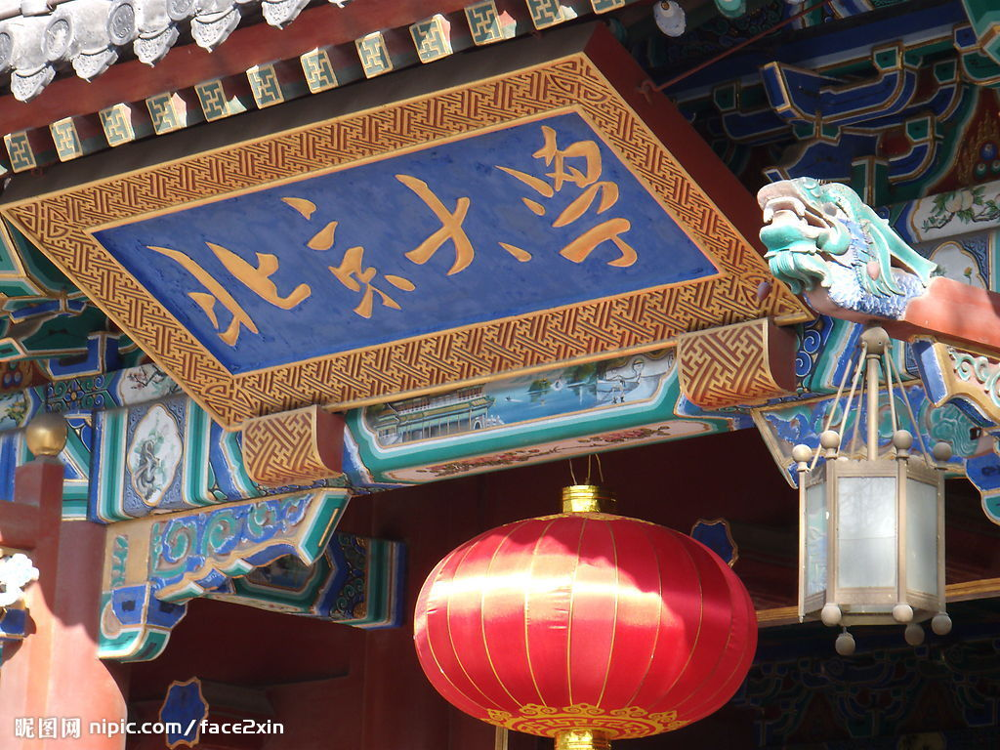

|  |  |
|
|---|---|---|
Home | Schedule | Invited Speaker Bios | Venue/Hotel Directions | ISHCS 2011 |
||
2nd International Symposium on High Confidence Software (ISHCS 2012)October 29-30, 2012, Blue Horizon Hotel Laoshan Qingdao, Qingdao, Shandong, ChinaHost: Institute
of Software and Key
Laboratory of High Confidence Software Technologies,
Ministry of Education, Peking University Co-located with Internetware 2012 (Oct 30-31) |
News: Talk slides are linked from the schedule.
Following great success of the first International
Symposium on High Confidence Software (ISHCS 2011), ISHCS
2012 is to provide a forum for researchers in related research
areas to address the challenges in high confidence software,
exchange ideas, and foster collaborations. The symposium is
hosted and sponsored by Institute
of Software and Key
Laboratory of High Confidence Software Technologies, Ministry
of Education, Peking University, Beijing. The symposium
chair is Hong
Mei
and the Program Co-Chairs are Tao
Xie
and Lu
Zhang.
The symposium consists of a series of invited talks from internationally known researchers on the symposium topic and discussion/panel sessions to enable substantial interactions with attendees.
Here is the symposium schedule.
If you have any questions, please contact the
symposium organizers.
Invited
Speakers
- Joint Keynote Speakers
- Shing-Chi
Cheung (Hong Kong University of Science and Technology,
China) talk
abstract/bio
- Xinyu Feng (University of Science and Technology of China, China) talk abstract/bio
- Zhenjiang Hu
(National Institute of Informatics, Japan) talk
abstract/bio
- Gang
Huang (Peking University, China) talk
abstract/bio
- Tao Xie
(North Carolina State University, USA) talk
abstract/bio
- Yingfei Xiong (Peking University, China) talk abstract/bio
- Yun
Yang (Swinburne University of Technology, Australia) talk abstract/bio
- Lu Zhang (Peking University, China) talk abstract/bio
- Charles Zhang (Hong Kong University of Science and Technology, China) talk abstract/bio
- Dongmei
Zhang (Microsoft Research Asia, China) talk
abstract/bio
- Yuanyuan Zhou (University of California San Diego, USA) talk abstract/bio
Symposium Organizers
Symposium Chair: Hong Mei (Peking University, China)
Program Co-Chairs: Tao
Xie (North Carolina State
University, USA), Lu
Zhang (Peking University, China)